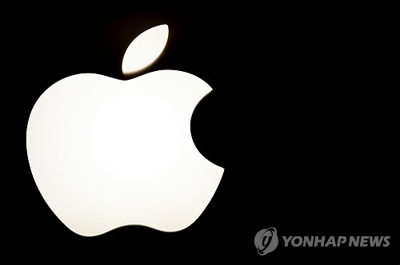

애플

애플의 노예랍니다
영원한 앱등이 완벽한 앱등이
Apple Inc.은 1976년 4월 1일에 설립된 미국의 IT 기업이며 전 세계 최대의 다국적 기업이다.[9] 하드웨어, 소프트웨어, 온라인 서비스를 디자인(설계), 개발, 제조[10](제작), 판매한다. 21세기 실리콘밸리 IT 산업을 대표[11]하는 기업으로 Microsoft, Google, Amazon, Facebook 등과 묶어 빅테크, FAANG[12], MAGA[13] 같은 별칭으로 불린다.